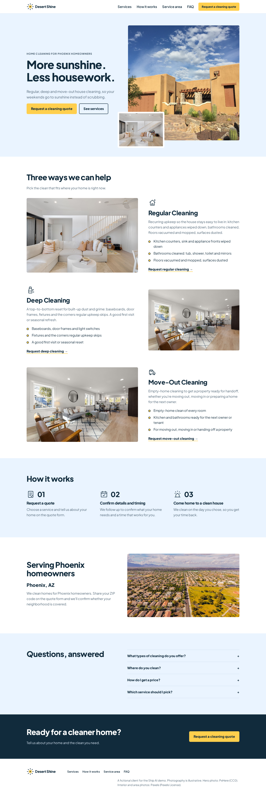
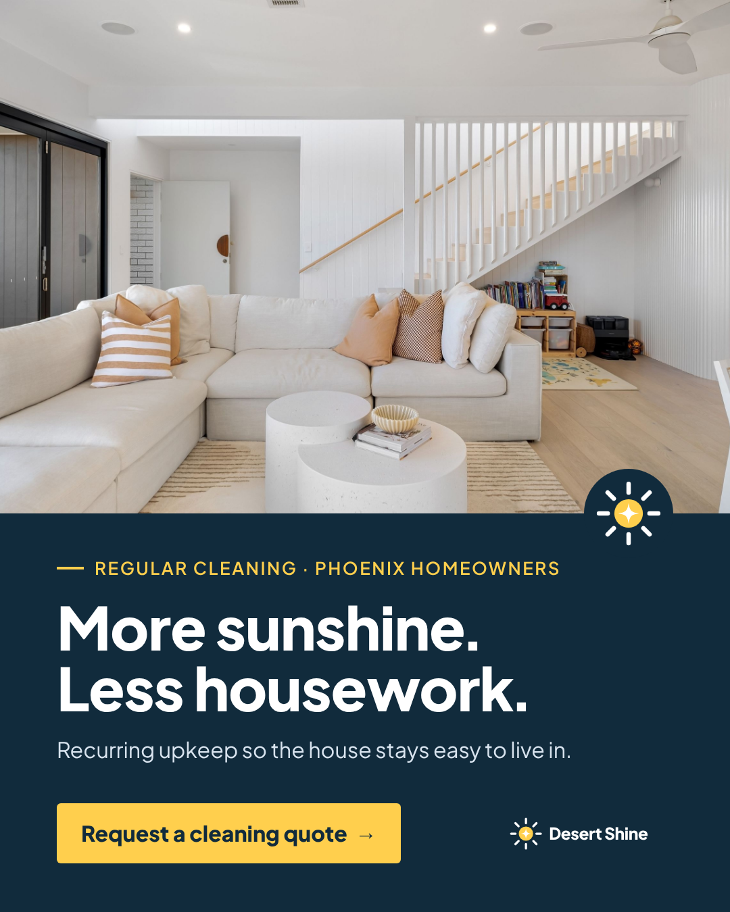

Photo-led design, three clear services, and a quote flow that validates the request and shows a demo summary.
Explore the website ↗Agency demo · First client
One shared brief. A complete website, a polished feed graphic, and a 15-second video. The two approved workshop drafts were created, read back, and deleted after the test.
Both approved drafts matched the captions, media and Ship AI X account. Deletion was verified by HTTP 404 for both IDs. Nothing was scheduled or published.

Photo-led design, three clear services, and a quote flow that validates the request and shows a demo summary.
Explore the website ↗
Workshop example: Desert Shine is a fictional housecleaning client. Our Grok Bot team turned one website into this branded graphic. More sunshine. Less housework.
Explore the demo: https://www.shipai.club/growth-engineering/desert-shine
media/social-v1.png
c741c20f0e46de3b38916602a0df2af4d4435ca0d668962622247593f14e9630Workshop example: a 15-second ad for Desert Shine, our fictional housecleaning client. Built by our AI marketing team from the same website and positioning.
See the demo: https://www.shipai.club/growth-engineering/desert-shine
media/video-v1.mp4
96f90610cc525826f228e919ba5968a7d3f3409a973eed2c1c61aed1a415bc4bTest complete · Cleanup verified
Verified destination: Ship AI X @shipaiclub · Zernio profile Default. This run uses Ship AI by your explicit request. Each caption identifies Desert Shine as a workshop example; the reusable templates retain normal client destinations.
The Grok Bot team built the site and creative. This handoff test used the existing local Zernio connection. Direct Grok Bot access to Zernio is still unconfigured, and Meta Ads MCP still needs reconnect and a read-only account check. Paid launches and budgets require a separate instruction.
The approved v4 test is complete. Both drafts were deleted at your request. No further sends are queued.
desert-shine-redesign-2026-10-14 @ v4
b385bbc19a5b2619907d827ecd40f54e01f08d146508e524b00433d0f36d0d52